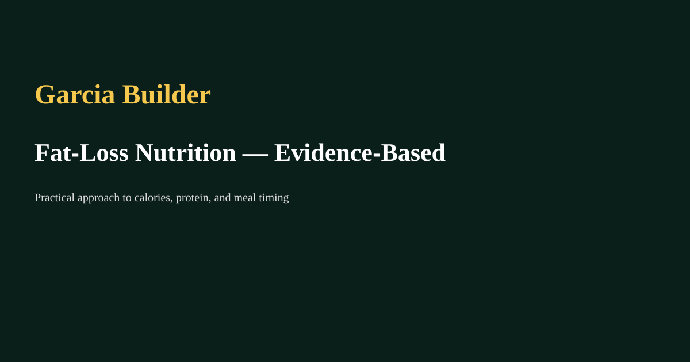

Fat‑Loss Nutrition — Evidence‑Based Guide
By Andre Julio Garcia | June 2026

Core principle: calories in vs out
Fat loss requires a sustained calorie deficit. Small, manageable deficits (250–500 kcal/day) preserve muscle and improve adherence.
Protein is paramount
Prioritise protein (~1.6–2.4 g/kg/day) to maintain lean mass during dieting; distribute evenly across meals.
Food quality & satiety
Choose high‑volume, nutrient‑dense foods (vegetables, lean proteins, whole grains) to improve fullness and micronutrient intake.
Practical tips
- Track for 2–4 weeks to understand intake.
- Use progressive adjustments — don’t crash diet.
- Include resistance training to retain muscle.
Mental approach
Set process goals and include flexibility (planned treats) to avoid burnout.
← Back to Blog